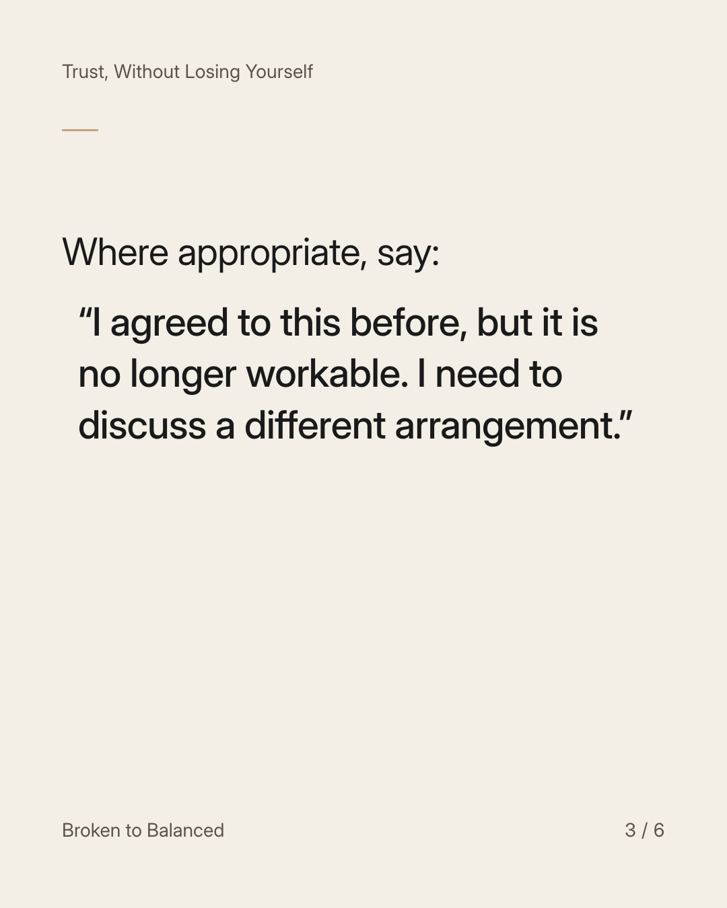
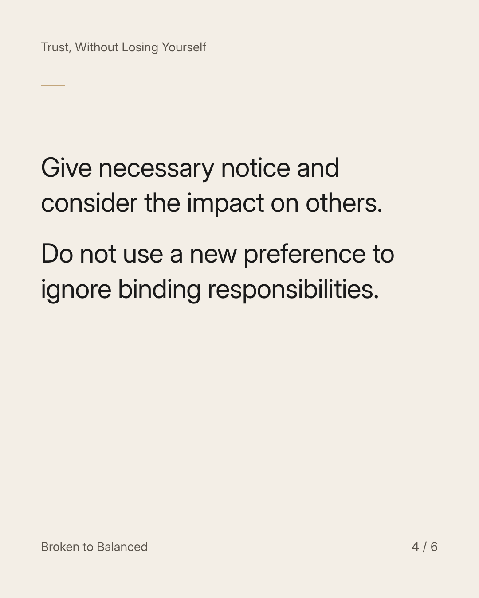
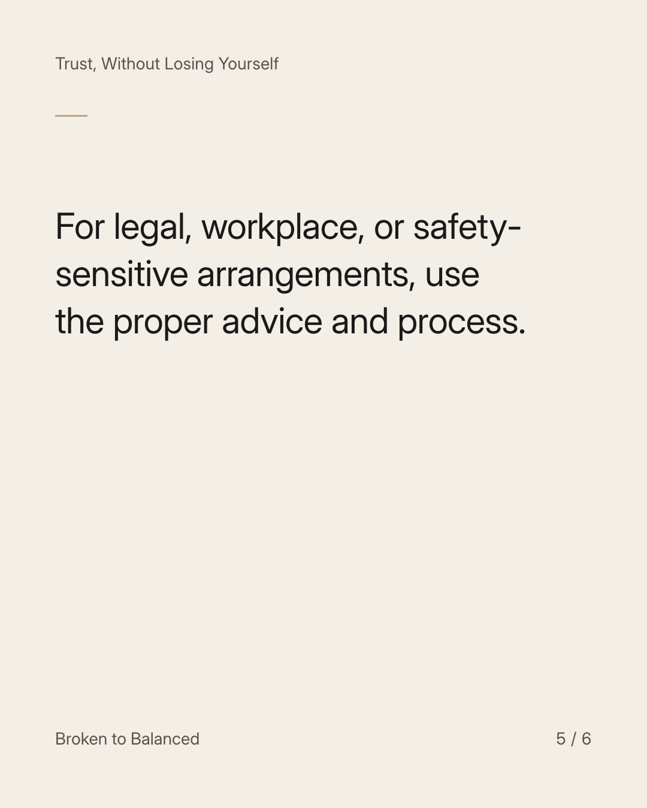
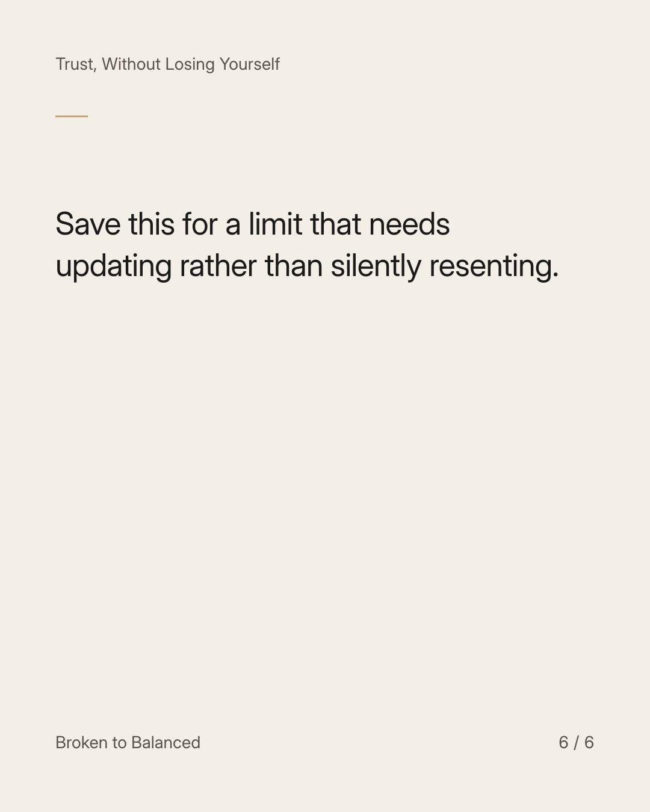

Exact text and accessibility text
You can revise a boundary when you understand your needs more clearly.
Slide 1 of 6. You can revise a boundary when you understand your needs more clearly.

Exact text and accessibility text
A previous yes does not automatically describe what you can offer forever.
Slide 2 of 6. A previous yes does not automatically describe what you can offer forever.


Exact text and accessibility text
Where appropriate, say: “I agreed to this before, but it is no longer workable. I need to discuss a different arrangement.”
Slide 3 of 6. Where appropriate, say: “I agreed to this before, but it is no longer workable. I need to discuss a different arrangement.”


Exact text and accessibility text
Give necessary notice and consider the impact on others. Do not use a new preference to ignore binding responsibilities.
Slide 4 of 6. Give necessary notice and consider the impact on others. Do not use a new preference to ignore binding responsibilities.


Exact text and accessibility text
For legal, workplace, or safety-sensitive arrangements, use the proper advice and process.
Slide 5 of 6. For legal, workplace, or safety-sensitive arrangements, use the proper advice and process.


Exact text and accessibility text
Save this for a limit that needs updating rather than silently resenting.
Slide 6 of 6. Save this for a limit that needs updating rather than silently resenting.
Exact caption
Plain-text fallback: select and copy the caption.